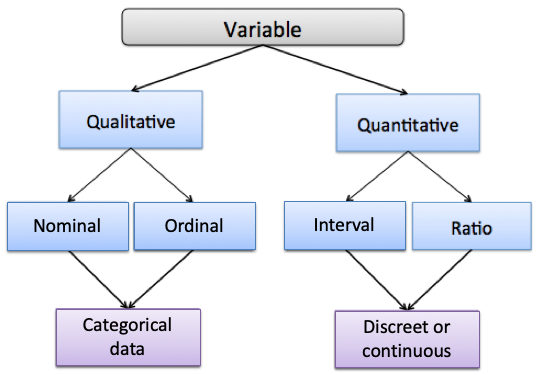
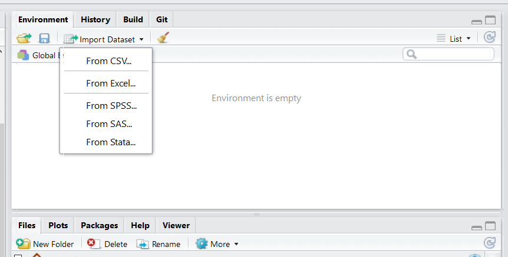
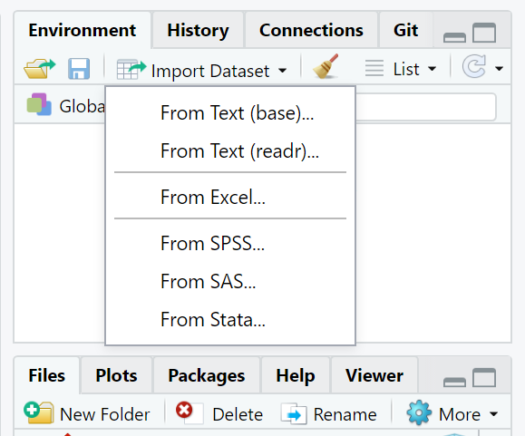
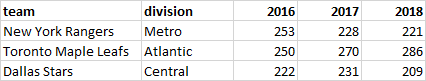
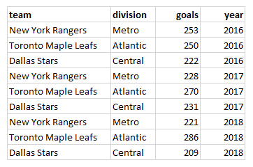

Chapter 4 Introduction to Data Carpentry
Data carpentry gives us the tools to work with large data sets. During this chapter you will learn basic concepts and skills to help you import, tidy and manage your data.
4.1 Data Types
Before learning how to work with data in R, we should know about some of the different types of data there are.
Here is a figure that lays out the hierarchical levels of data types. We use the term ‘variable’ to refer here to data.

4.1.0.1 Qualitative vs. Quantitative Data
As you can see at the highest level, there are two data types: quantitative and qualitative. The easiest way to distinguish these data types part is to think of qualitative data as data we that are types . In practical terms, you can think of quantitative data as measures such as values or counts that can be expressed as numbers and can be compared on a numeric scale - either whole numbers or numbers with decimal places. Qualitative data are measures or observations of qualities, types or characteristics. They are often cases not numbers but in text form (although they can sometimes be numbers).
4.1.1 Categorical Data
Under qualitative data, we have two different data types: Nominal and Ordinal. Both of these data types are known as categorical data, which means they represent characteristics such as a person’s gender, education level, language, ethnicity etc.
Categorical data can also be represented in a dataset by numbers. For example, if we are studying smokers and non-smokers in a study, the variable “smoking” would be a categorical variable. We could represent that data in text format using “smoker” or “non-smoker” as our data entry, or we could represent smokers as a “0” and non-smokers as a “1”. However, it is important to remember that these numbers don’t have any mathematical meaning here - it’s just a convenient way of representing the data.
4.1.1.1 Nominal Data
Nominal data, sometimes referred to as unordered data are values which represent discrete units and are used to label a variable that have no quantitative value. The key thing about nominal data is that they do not have any natural value or rank, therefore if you change the order of the data, the meaning of the data does not change.
An example of nominal data would be the results to: “What languages do you speak at home?”. If in our study we got the answers: French, English, Spanish & Hindi from different subjects, then the data type is unordered. There is no sense in that French, English, Spanish, or Hindi are higher in rank than any other - they are simply unordered categories.
4.1.1.2 Ordinal Data
Like nominal data, ordinal data describes discrete units or categories. However, unlike nominal data, ordinal data does have a natural order or ranking to it.
For example, in a study we may ask subjects, “What is the highest level of education you achieved?” They may be able to choose from the following options:
1- Elementary 2- High School 3- Undergraduate 4- Graduate
Here, each level of the data is a category, but it is ordered. Graduate is higher than Undergraduate which is higher than High School which is higher than Elementary. Therefore this data variable (education) is ordinal data.
4.1.2 Numerical Data (Discrete vs. Continuous)
Under quantitative data, there is numerical data consist of numbers with real mathematical meaning. There are two types of numerical data.
- Discrete data is data that is separated such that this data can only take on certain value. Most often, these are things that can only be counted in whole units. e.g. If you asked subjects in a study - “how many unique people did you text this week?”, then the answer has to be an integer (a whole number), e.g. 0,1,2,3,etc. You cannot text 2.5 people. Think about discrete data as count data since it can only be counted and not measured.
- Continuous data is the opposite of discrete data, it can only be measured not counted. Continuous quantitative data is most often measured using some instrument. For example, if we collected the body weight or height of each subject in a study, then we would get values that would be measured using a scale or a measuring tape and could include decimal places. e.g. you could be 170.5 lbs heavy and you can be 180.2 cm tall.
Additionally, quantitative data can be described in terms of interval and ratio data.
4.1.2.1 Interval Data
Interval data represents values that are ordered on a scale and the differences between any two values has meaning.
In interval data there is no true zero, which means if you have zero in your data, then zero is just another number. For example, zero on the Fahrenheit temperature scale means it is zero degrees outside, but doesn’t mean the scale stops - 0 actually refers to a temperature. We can also have negative numbers in interval data which are meaningful.
4.1.2.2 Ratio data
For a variable to be considered ratio data, it holds all the properties of an interval variable - it relates to numbers (including those with decimal places) that can be ordered on a scale. However, ratio data also has a true meaning of zero. Whenever a ratio variable is zero, it means there is none of that variable.
For example, in a study, if a subject reports that they texted zero people in the last week, then here 0 really means the absence of something - it relates to none. Another example of ratio scale data is temperature in Kelvin, where zero degrees Kelvin means there is no heat being emitted.
4.2 Importing Data
There are different options for importing data. It’s possible to import data of all different formats into RStudio. We will primarily use spreadsheet type files that have been saved with the .csv suffix. These are called ‘comma separated values’.
Option 1. Import Tab You can click on the “Import Dataset” tab in the top right of RStudio - it’s located just above your global environment.
Depending on your RStudio version, you will be asked to select from a dropdown menu. When importing .csv files, you want to select From CSV... if your menu looks like this:

If your menu looks like the underneath, then you’ll want to select From Text (readr):

Option 2. Writing code. This is the option that we will use in our scripts for this course. You may notice that all the datasets that we wish to use are in a folder called “data”. To read in any of these datasets, what we need to do is use the read_csv() function. This comes from a package contained with the tidyverse package, so we must have imported that library first. We then tell it which dataset to find within the ‘data’ folder. We use the notation “data/…” to tell it to look inside the data folder. For instance, if we wished to load in the bmi.csv dataset, and assign it the name bmi, we would do it like this - make sure to put quotes around the whole file name and location:
library(tidyverse) #load package
bmi <- read_csv("data/bmi.csv") # bring in data
head(bmi) # first six rows## # A tibble: 6 x 9
## id age bmi chol insulin dbp sbp smoke educ
## <dbl> <dbl> <dbl> <dbl> <dbl> <dbl> <dbl> <dbl> <chr>
## 1 1 18.3 15.4 47.2 2.78 29.5 49.7 1 D
## 2 2 19.4 14.5 52.1 3.47 31.3 49.0 2 C
## 3 3 21.1 16.0 52.2 4.06 32.4 51.7 1 B
## 4 4 21.3 19.5 53.2 4.48 32.0 NA 2 A
## 5 5 21.1 18.6 55.4 5.34 33.7 53.8 1 D
## 6 6 23.9 19.5 54.3 6.29 35.0 56.0 2 Ctail(bmi) # last six rows## # A tibble: 6 x 9
## id age bmi chol insulin dbp sbp smoke educ
## <dbl> <dbl> <dbl> <dbl> <dbl> <dbl> <dbl> <dbl> <chr>
## 1 15 34.8 30.4 63.6 15.3 42.7 64.8 1 B
## 2 16 33.6 29.9 65.5 NA 46.4 65.6 2 A
## 3 17 33.4 NA 65.2 18.2 46.2 64.6 1 D
## 4 18 35.1 32.5 68.6 19.7 45.8 66.1 2 C
## 5 19 35.0 33.4 NA 21.1 NA 68.4 1 B
## 6 20 37.5 34.1 68.0 22.1 49.3 68.6 2 AIf you want to see more on what the data looks like the following functions can help.
nrow(bmi) # how many rows in dataset## [1] 20ncol(bmi) # how many columns in dataset## [1] 9colnames(bmi) # column names## [1] "id" "age" "bmi" "chol" "insulin" "dbp" "sbp" "smoke" "educ"If you just want to view your entire dataset, there is a function for that.
View(bmi)
4.3 Introduction to Dataframes
A dataframe, in R is like a spreadsheet that contains your data. Each column contains values or characters for one variable. In R, columns are called variables. Rows are called observations.
In R dataframes need to contain the following:
Columns should all be the same length, with unique column names. These column names should not start with numbers or punctuation, and have no spaces.
The data stored in dataframes can hold many different data types. The most common are numbers. R describes columns with numbers as being numeric, although a column containing only whole numbers (e.g. 1, 5, 342, 1034) may be called integers. Columns containing any value with a decimal place (e.g. 0.01, 4.4, -7.39494) will be called double. Both
doubleandintegerare types ofnumericdata.
The second most common data type for a column is character. This is the case if the data in the column have any text or punctuation.
A related column type is factor. This occurs when the character type is grouped, e.g. if you had a column with different days of the week, you may wish for R to recognize that each is a separate category.
Another column type that comes up semi-regularly, although not much in this course, is logical. This is when the column contains either TRUE or FALSE values.
Let’s dive into all the features of a dataframe.
First import data, using read_csv().
df <- read_csv("data/cheese.csv")4.3.1 Dataframe basics
- Look at top few rows using
head(). The default forhead()is to look at the top 6 rows. However, if you put a comma, and then a number, you can get that number of rows instead. Here we get the default 6, and then we get 4 and 8 rows.
head(df)## # A tibble: 6 x 9
## type sat_fat polysat_fat monosat_fat protein carb chol fiber kcal
## <chr> <dbl> <dbl> <dbl> <dbl> <dbl> <dbl> <dbl> <dbl>
## 1 blue 18.7 0.8 7.78 21.4 2.34 75 0 353
## 2 brick 18.8 0.784 8.60 23.2 2.79 94 0 371
## 3 brie 17.4 0.826 8.01 20.8 0.45 100 0 334
## 4 camembert 15.3 0.724 7.02 19.8 0.46 72 0 300
## 5 caraway 18.6 0.83 8.28 25.2 3.06 93 0 376
## 6 cheddar 21.1 0.942 9.39 24.9 1.28 105 0 403head(df, 4)## # A tibble: 4 x 9
## type sat_fat polysat_fat monosat_fat protein carb chol fiber kcal
## <chr> <dbl> <dbl> <dbl> <dbl> <dbl> <dbl> <dbl> <dbl>
## 1 blue 18.7 0.8 7.78 21.4 2.34 75 0 353
## 2 brick 18.8 0.784 8.60 23.2 2.79 94 0 371
## 3 brie 17.4 0.826 8.01 20.8 0.45 100 0 334
## 4 camembert 15.3 0.724 7.02 19.8 0.46 72 0 300head(df, 8)## # A tibble: 8 x 9
## type sat_fat polysat_fat monosat_fat protein carb chol fiber kcal
## <chr> <dbl> <dbl> <dbl> <dbl> <dbl> <dbl> <dbl> <dbl>
## 1 blue 18.7 0.8 7.78 21.4 2.34 75 0 353
## 2 brick 18.8 0.784 8.60 23.2 2.79 94 0 371
## 3 brie 17.4 0.826 8.01 20.8 0.45 100 0 334
## 4 camembert 15.3 0.724 7.02 19.8 0.46 72 0 300
## 5 caraway 18.6 0.83 8.28 25.2 3.06 93 0 376
## 6 cheddar 21.1 0.942 9.39 24.9 1.28 105 0 403
## 7 cheshire 19.5 0.87 8.67 23.4 4.78 103 0 387
## 8 colby 20.2 0.953 9.28 23.8 2.57 95 0 394You can do the same thing with tail() to look at the bottom rows. The default again is 6, but you can tell it how many rows you wish to look at:
tail(df)## # A tibble: 6 x 9
## type sat_fat polysat_fat monosat_fat protein carb chol fiber kcal
## <chr> <dbl> <dbl> <dbl> <dbl> <dbl> <dbl> <dbl> <dbl>
## 1 past process,swiss,lofat 3.30 0.18 1.35 25.5 4.3 35 0 170
## 2 cottage,lowfat,1% milkfat,w/veg 0.619 0.039 0.282 10.9 3 3 0 67
## 3 past process,cheddar or american,lo na 19.7 0.988 8.93 22.2 1.6 94 0 375
## 4 swiss,low sodium 17.7 0.968 7.26 28.4 3.4 92 0 376
## 5 swiss,low fat 3.30 0.18 1.35 28.4 3.4 35 0 179
## 6 mozzarella,lo na 10.9 0.509 4.84 27.5 3.1 54 0 280tail(df, 10)## # A tibble: 10 x 9
## type sat_fat polysat_fat monosat_fat protein carb chol fiber kcal
## <chr> <dbl> <dbl> <dbl> <dbl> <dbl> <dbl> <dbl> <dbl>
## 1 past process,american,lofat 4.41 0.222 2.00 24.6 3.5 35 0 180
## 2 american cheddar,imitn 8.79 0.409 4.10 16.7 11.6 36 0 239
## 3 parmesan,lo na 19.1 0.659 8.72 41.6 3.7 79 0 456
## 4 cottage,lowfat,1% milkfat,no na 0.632 0.031 0.284 12.4 2.7 4 0 72
## 5 past process,swiss,lofat 3.30 0.18 1.35 25.5 4.3 35 0 170
## 6 cottage,lowfat,1% milkfat,w/veg 0.619 0.039 0.282 10.9 3 3 0 67
## 7 past process,cheddar or american,lo na 19.7 0.988 8.93 22.2 1.6 94 0 375
## 8 swiss,low sodium 17.7 0.968 7.26 28.4 3.4 92 0 376
## 9 swiss,low fat 3.30 0.18 1.35 28.4 3.4 35 0 179
## 10 mozzarella,lo na 10.9 0.509 4.84 27.5 3.1 54 0 280We can also get various dimensions of a dataframe. nrow() gets the number of rows (also termed observations), ncol() gets the number of columns (also called variables), dim() returns both the number of rows and the number of columns, and length() is another way to get the number of columns.
nrow(df) ## [1] 73ncol(df) ## [1] 9dim(df) ## [1] 73 9length(df) ## [1] 9As we showed earlier, colnames() is a very useful function for retrieving the names of columns in a dataframe. This is particularly useful when you can’t fit all of the columns onto your screen which is common with big datasets.
colnames(df)## [1] "type" "sat_fat" "polysat_fat" "monosat_fat" "protein" "carb" "chol"
## [8] "fiber" "kcal"Sometimes you may wish to change column names. This is common when you’ve imported some messy data from elsewhere. Hopefully if it is your own data you named your columns well in the first place.
The way to change column names is to assign the new name to the appropriate column, by indicating which column with square brackets []:
colnames(df)[6] <- "carbo"
colnames(df)## [1] "type" "sat_fat" "polysat_fat" "monosat_fat" "protein" "carbo" "chol"
## [8] "fiber" "kcal"In the above example, we changed the name of the 6th column to carbo. You can change all column names by doing the following:
colnames(df) <- c("type1", "sat_fat1", "polysat_fat1", "monosat_fat1", "protein1", "carb1", "chol1", "fiber1", "kcal1")
head(df)## # A tibble: 6 x 9
## type1 sat_fat1 polysat_fat1 monosat_fat1 protein1 carb1 chol1 fiber1 kcal1
## <chr> <dbl> <dbl> <dbl> <dbl> <dbl> <dbl> <dbl> <dbl>
## 1 blue 18.7 0.8 7.78 21.4 2.34 75 0 353
## 2 brick 18.8 0.784 8.60 23.2 2.79 94 0 371
## 3 brie 17.4 0.826 8.01 20.8 0.45 100 0 334
## 4 camembert 15.3 0.724 7.02 19.8 0.46 72 0 300
## 5 caraway 18.6 0.83 8.28 25.2 3.06 93 0 376
## 6 cheddar 21.1 0.942 9.39 24.9 1.28 105 0 403Let’s return them back to the original values:
colnames(df) <- c("type", "sat_fat", "polysat_fat", "monosat_fat", "protein", "carb", "chol", "fiber", "kcal")
head(df)## # A tibble: 6 x 9
## type sat_fat polysat_fat monosat_fat protein carb chol fiber kcal
## <chr> <dbl> <dbl> <dbl> <dbl> <dbl> <dbl> <dbl> <dbl>
## 1 blue 18.7 0.8 7.78 21.4 2.34 75 0 353
## 2 brick 18.8 0.784 8.60 23.2 2.79 94 0 371
## 3 brie 17.4 0.826 8.01 20.8 0.45 100 0 334
## 4 camembert 15.3 0.724 7.02 19.8 0.46 72 0 300
## 5 caraway 18.6 0.83 8.28 25.2 3.06 93 0 376
## 6 cheddar 21.1 0.942 9.39 24.9 1.28 105 0 403
4.3.2 Indexing dataframes.
There are two indexing methods we need to learn. One is the $ sign, which indicates we want to get data from a specific column. The other is the square brackets [].
The $ indicates which column to call. For instance, if we wish to get all the data from the chol column of the dataset df, then we would type df$chol and it returns all the data in that column:
df$chol## [1] 75 94 100 72 93 105 103 95 17 13 7 10 4 110 89 89 116 94 114 110 90 89 79 89 64
## [26] 54 96 74 88 68 123 69 51 31 104 90 92 102 94 94 85 72 94 85 105 79 46 105 105 105
## [51] 21 100 12 88 55 62 65 11 4 63 18 14 54 35 36 79 4 35 3 94 92 35 54What if you just want the first 10 rows of kcal? Then we could get all the data from that column with df$kcal but then use the square brackets to tell it to get the values in positions 1 to 10 with [1:10]:
df$kcal[1:10]## [1] 353 371 334 300 376 403 387 394 98 97This works, because you can think of all the data values in each column as essentially its own vector. The square brackets work just as they would with any other vector indexing (see section 3.3).
Square brackets can be used on the whole dataframe to call just certain rows and columns. Importantly row numbers need to be written before the comma, and columns after comma. If you leave anything blank, then it will assume that you mean “all” of the rows or columns.
Technically, running df, and df[,] all return the whole dataframe. What you’re saying is return all of the rows and all of the columns from df.
df## # A tibble: 73 x 9
## type sat_fat polysat_fat monosat_fat protein carb chol fiber kcal
## <chr> <dbl> <dbl> <dbl> <dbl> <dbl> <dbl> <dbl> <dbl>
## 1 blue 18.7 0.8 7.78 21.4 2.34 75 0 353
## 2 brick 18.8 0.784 8.60 23.2 2.79 94 0 371
## 3 brie 17.4 0.826 8.01 20.8 0.45 100 0 334
## 4 camembert 15.3 0.724 7.02 19.8 0.46 72 0 300
## 5 caraway 18.6 0.83 8.28 25.2 3.06 93 0 376
## 6 cheddar 21.1 0.942 9.39 24.9 1.28 105 0 403
## 7 cheshire 19.5 0.87 8.67 23.4 4.78 103 0 387
## 8 colby 20.2 0.953 9.28 23.8 2.57 95 0 394
## 9 cottage,crmd,lrg or sml curd 1.72 0.123 0.778 11.1 3.38 17 0 98
## 10 cottage,crmd,w/fruit 2.31 0.124 1.04 10.7 4.61 13 0.200 97
## # ... with 63 more rowsdf[,] #return all rows and all columns## # A tibble: 73 x 9
## type sat_fat polysat_fat monosat_fat protein carb chol fiber kcal
## <chr> <dbl> <dbl> <dbl> <dbl> <dbl> <dbl> <dbl> <dbl>
## 1 blue 18.7 0.8 7.78 21.4 2.34 75 0 353
## 2 brick 18.8 0.784 8.60 23.2 2.79 94 0 371
## 3 brie 17.4 0.826 8.01 20.8 0.45 100 0 334
## 4 camembert 15.3 0.724 7.02 19.8 0.46 72 0 300
## 5 caraway 18.6 0.83 8.28 25.2 3.06 93 0 376
## 6 cheddar 21.1 0.942 9.39 24.9 1.28 105 0 403
## 7 cheshire 19.5 0.87 8.67 23.4 4.78 103 0 387
## 8 colby 20.2 0.953 9.28 23.8 2.57 95 0 394
## 9 cottage,crmd,lrg or sml curd 1.72 0.123 0.778 11.1 3.38 17 0 98
## 10 cottage,crmd,w/fruit 2.31 0.124 1.04 10.7 4.61 13 0.200 97
## # ... with 63 more rowsTo just get the 7th row, you put a 7 before the comma, and leave after the comma blank:
df[7,]## # A tibble: 1 x 9
## type sat_fat polysat_fat monosat_fat protein carb chol fiber kcal
## <chr> <dbl> <dbl> <dbl> <dbl> <dbl> <dbl> <dbl> <dbl>
## 1 cheshire 19.5 0.87 8.67 23.4 4.78 103 0 387To get the 10th to 14th rows you can put 10:14 before the comma and leave after the comma blank:
df[10:14,]## # A tibble: 5 x 9
## type sat_fat polysat_fat monosat_fat protein carb chol fiber kcal
## <chr> <dbl> <dbl> <dbl> <dbl> <dbl> <dbl> <dbl> <dbl>
## 1 cottage,crmd,w/fruit 2.31 0.124 1.04 10.7 4.61 13 0.200 97
## 2 cottage,nonfat,uncrmd,dry,lrg or sml curd 0.169 0.003 0.079 10.3 6.66 7 0 72
## 3 cottage,lowfat,2% milkfat 0.979 0.07 0.443 11.8 3.66 10 0 86
## 4 cottage,lowfat,1% milkfat 0.645 0.031 0.291 12.4 2.72 4 0 72
## 5 cream 19.3 1.44 8.62 5.93 4.07 110 0 342To get the 3rd column you can leave before the comma blank, and put a 3 after the comma:
df[,3]## # A tibble: 73 x 1
## polysat_fat
## <dbl>
## 1 0.8
## 2 0.784
## 3 0.826
## 4 0.724
## 5 0.83
## 6 0.942
## 7 0.87
## 8 0.953
## 9 0.123
## 10 0.124
## # ... with 63 more rowsTo get the first and second columns, leave before the comma blank and put a 1:2 after the comma:
df[,1:2]## # A tibble: 73 x 2
## type sat_fat
## <chr> <dbl>
## 1 blue 18.7
## 2 brick 18.8
## 3 brie 17.4
## 4 camembert 15.3
## 5 caraway 18.6
## 6 cheddar 21.1
## 7 cheshire 19.5
## 8 colby 20.2
## 9 cottage,crmd,lrg or sml curd 1.72
## 10 cottage,crmd,w/fruit 2.31
## # ... with 63 more rowsIf you want to get non-consecutive columns, you need to use c() with your numbers. For example, to get the 3rd, 5th, and 9th columns you leave before the comma blank and put c(3,5,9) after the comma:
df[,c(3,5,9)]## # A tibble: 73 x 3
## polysat_fat protein kcal
## <dbl> <dbl> <dbl>
## 1 0.8 21.4 353
## 2 0.784 23.2 371
## 3 0.826 20.8 334
## 4 0.724 19.8 300
## 5 0.83 25.2 376
## 6 0.942 24.9 403
## 7 0.87 23.4 387
## 8 0.953 23.8 394
## 9 0.123 11.1 98
## 10 0.124 10.7 97
## # ... with 63 more rowsYou can also combine these. So, to get the 20th to 22nd row, and the 1st, 5th and 9th column, you put 20:22 before the comma, and c(1,5,9) after the comma:
df[20:22,c(1,5,9)]## # A tibble: 3 x 3
## type protein kcal
## <chr> <dbl> <dbl>
## 1 gruyere 29.8 413
## 2 limburger 20.0 327
## 3 monterey 24.5 3734.3.3 Adding and removing columns
As we will see below in the tidyverse section, there is a way to creating new columns using the function mutate() which we recommend. However, there is also a quick way to create and delete new columns which is worth knowing about.
To create a new column, you can simply type a new name after writing your dataframe name and the dollar sign, and then assign something to it. So, if you wished to create a column called food_type you’d write df$food_type <- and then put whatever you wanted to put into that column. For example, if you wanted it to contain the word ‘cheese’ you’d do the following:
df$food_type <- "cheese"
head(df)## # A tibble: 6 x 10
## type sat_fat polysat_fat monosat_fat protein carb chol fiber kcal food_type
## <chr> <dbl> <dbl> <dbl> <dbl> <dbl> <dbl> <dbl> <dbl> <chr>
## 1 blue 18.7 0.8 7.78 21.4 2.34 75 0 353 cheese
## 2 brick 18.8 0.784 8.60 23.2 2.79 94 0 371 cheese
## 3 brie 17.4 0.826 8.01 20.8 0.45 100 0 334 cheese
## 4 camembert 15.3 0.724 7.02 19.8 0.46 72 0 300 cheese
## 5 caraway 18.6 0.83 8.28 25.2 3.06 93 0 376 cheese
## 6 cheddar 21.1 0.942 9.39 24.9 1.28 105 0 403 cheeseNow every observation (row) has the entry cheese in the column food_type.
If you wanted to put in different data for each observation, e.g. the country of origin of each cheese, then you’d need a vector that was the same length as the number of rows of the dataset. See the section on manually creating dataframes just below for some examples of this.
To delete a column from a dataframe, you just assign the word NULL, which is a special term in R, to that column, and then it will disappear:
df$food_type <- NULL
head(df)## # A tibble: 6 x 9
## type sat_fat polysat_fat monosat_fat protein carb chol fiber kcal
## <chr> <dbl> <dbl> <dbl> <dbl> <dbl> <dbl> <dbl> <dbl>
## 1 blue 18.7 0.8 7.78 21.4 2.34 75 0 353
## 2 brick 18.8 0.784 8.60 23.2 2.79 94 0 371
## 3 brie 17.4 0.826 8.01 20.8 0.45 100 0 334
## 4 camembert 15.3 0.724 7.02 19.8 0.46 72 0 300
## 5 caraway 18.6 0.83 8.28 25.2 3.06 93 0 376
## 6 cheddar 21.1 0.942 9.39 24.9 1.28 105 0 4034.3.4 Structure of Datasets
This little subsection is a bit more about the inner workings of dataframes. It won’t be coding that we use during this course, but if you ever do any extra R things by yourself, you may run into issues that this section could help you resolve.
You can see the structure of your data, whether each variable is a number, character, factor, logical, etc. This can be useful when trying to graph and analysis different types of data.
str(bmi)## spec_tbl_df [20 x 9] (S3: spec_tbl_df/tbl_df/tbl/data.frame)
## $ id : num [1:20] 1 2 3 4 5 6 7 8 9 10 ...
## $ age : num [1:20] 18.3 19.4 21.1 21.3 21.1 ...
## $ bmi : num [1:20] 15.4 14.5 16 19.5 18.6 ...
## $ chol : num [1:20] 47.2 52.1 52.2 53.2 55.4 ...
## $ insulin: num [1:20] 2.78 3.47 4.06 4.48 5.34 ...
## $ dbp : num [1:20] 29.5 31.3 32.4 32 33.7 ...
## $ sbp : num [1:20] 49.7 49 51.7 NA 53.8 ...
## $ smoke : num [1:20] 1 2 1 2 1 2 1 2 1 2 ...
## $ educ : chr [1:20] "D" "C" "B" "A" ...
## - attr(*, "spec")=
## .. cols(
## .. id = col_double(),
## .. age = col_double(),
## .. bmi = col_double(),
## .. chol = col_double(),
## .. insulin = col_double(),
## .. dbp = col_double(),
## .. sbp = col_double(),
## .. smoke = col_double(),
## .. educ = col_character()
## .. )
## - attr(*, "problems")=<externalptr>Here you can see that all variables are numeric, except for education with is a character.
Another common variable type is factor. This is similar to a character but it has levels. This means, that R knows that there are groups in that variable. You might notice that the variable smoke is currently a numerical variable with values being either a 1 (non smoker) or 2 (smoker). If we wanted to make a graph and plot non-smoker or smoker on the x-axis, then this would appear as 1 or 2, which isn’t helpful. In these situations, it can be helpful to convert our numeric variable into a factor. The way to do that is as follows:
bmi$smoke <- as.factor(bmi$smoke)The $ basically allows you to call certain columns in a dataframe. The code bmi$smoke is allowing us to only change that column, or variable to a factor without changing anything else in the dataframe.
You can also change variables to characters with as.character() and to numbers with as.numeric().
4.4 Manually creating a Dataframe
Often in R, we don’t want to import a dataset, but rather create a dataset of our own manually in the script. We can do that using the function data.frame().
Let’s just do a small example. Say, we want to create a dataframe with four columns. We will have the names of 6 different pets in column 1 and call that column name. In the second column, we want the ages of those pets and we’ll call that column age. In the third column we will have the type of animal that pet is, and we’ll call that column animal. In the fourth column, we’ll have whether it’s a male or female pet and we’ll call that column sex. In the fifth column, we’ll have the main color of the pet, and we’ll call that column color.
Here are our 6 pets:
- Steve, an orange male goldfish who is 5.
- Hannah, a female blue parrot who is 12.
- Colin, a brown male cat who is 15.
- Archibald, a grouchy green male terrapin who is 3.
- Missy, a female yellow labrador dog who is 2.
- Bob, a black male spider who is 10.
We need to make sure we put each of the column information in the right order in our dataframe. This is how we manually enter the data:
petdf <-
data.frame(
name = c("Steve", "Hannah", "Colin", "Archibald", "Missy", "Bob"),
age = c(5, 12, 15, 3, 2, 10),
animal = c("goldfish", "parrot", "cat", "terrapin", "dog", "spider"),
sex = c("M", "F", "M", "M", "F", "M"),
color = c("orange", "blue", "brown", "green", "yellow", "black")
)
petdf## name age animal sex color
## 1 Steve 5 goldfish M orange
## 2 Hannah 12 parrot F blue
## 3 Colin 15 cat M brown
## 4 Archibald 3 terrapin M green
## 5 Missy 2 dog F yellow
## 6 Bob 10 spider M blackInside dataframe() we write each column name. Then we put an = sign, and then write the vector of characters or numbers. After each column’s data is entered, we write a comma , to indicate we’re going to the next column. The exception to this is after the last column is entered, color in this case, where we don’t write a comma after we’re done entering all the color information. This indicates that we’re done. Also note that every column has the same number of pieces of information (6). If we had unequal bits of information, R would generally not allow us to make the dataframe. There is one gotcha here though - if you enter less than the number of rows of your new dataframe, e.g. if you’d only entered two values in the color column say, R will repeat those two colors through the remaining empty rows. You need to be careful! If you’re not sure what you’re doing, the best is to ensure that you have the exact number of values as you want rows inside each vector.
4.5 tidyverse
The package tidyverse is what we will be using for most of our data carpentry. tidyverse is a larger package which includes several packages useful for managing, exploring and visualizing data such as tidyr, dplyr, ggplot2, and more.
In this section, we will learn the following functions and syntax:
filter() - subsetting data
select() - selecting columns
arrange() - sorting a column
mutate() - adding a new column
count() - counts the number of values in a column
%>% means “and next do this”
== means “is equal to”
!= means “is not equal to”
| means “or”
First, make sure that you have the tidyverse installed. If you run the following code and do not get an error message saying “tidyverse not found”, then you are good:
library(tidyverse)If you did get the error message, then you’ll need to install the library. You only need to do this once, but you will have to load a library on every script you plan to use it.
To install the package:
install.package(tidyverse) #installTo load the package to use each time you need it:
library(tidyverse)From the tidyverse package readr we can read in our data. We are going to work with a dataset called bloodwork that we will shorten to bw. It contains health information on several subjects:
library(tidyverse) #load
bw <- read_csv("data/bloodwork.csv")head(bw) ## # A tibble: 6 x 11
## ids age sex state children smoker hrate bpsyst cellcount immuncount immuncount2
## <chr> <dbl> <chr> <chr> <dbl> <chr> <dbl> <dbl> <dbl> <dbl> <dbl>
## 1 JEC 19 female NJ 1 no 63 101 0.126 0.993 0.921
## 2 GBH 20 male NY 1 yes 73 120 0.169 1.18 1.19
## 3 EDH 21 female NJ 0 no 65 100 0.281 4.34 3.21
## 4 AAA 21 female CT 3 no 66 109 0.244 2.56 4.01
## 5 AJF 24 female NJ 0 no 67 108 0.092 6.45 9.13
## 6 FJC 25 female NY 1 yes 80 118 0.014 3.97 2.85tail(bw) ## # A tibble: 6 x 11
## ids age sex state children smoker hrate bpsyst cellcount immuncount immuncount2
## <chr> <dbl> <chr> <chr> <dbl> <chr> <dbl> <dbl> <dbl> <dbl> <dbl>
## 1 JIB 66 female NY 0 no 62 121 0.097 1.39 2.13
## 2 HBB 67 female NJ 1 yes 74 147 0.288 2.27 1.73
## 3 HDG 68 female NY 3 yes 65 129 0.11 2.65 2.59
## 4 ECD 68 female NJ 2 yes 77 129 0.404 2.02 4.22
## 5 HHJ 69 male CT 2 no 71 121 0.475 0.463 0.449
## 6 CCG 70 male CT 0 yes 80 132 0.078 1.06 1.01As you can see, we have variables such as ids, age, the state people live in, their heart rate, how many children they have etc. etc.
4.5.1 table()
This function is not a tidyverse function but is a quick summary function that is useful to know - table(). It is good for quickly summarizing categorical or discrete numerical variables.
For example, to look at the number of smokers and non-smokers, we can do the following:
table(bw$smoker)##
## no yes
## 15 15We have 15 non-smokers and 15 smokers in the dataset.
To look at the frequency count of how many subjects have 0, 1, 2, 3 children we can do:
table(bw$children)##
## 0 1 2 3
## 13 10 5 2We have thirteen people with 0 children ten with 1 child, five with 2 children and two with 3 children.
You can also compare two categories at once. For instance, to look at the smokers and non-smokers that have different numbers of children, we can include both in the table() function and separate by a comma:
table(bw$smoker, bw$children)##
## 0 1 2 3
## no 7 4 3 1
## yes 6 6 2 1The tidyverse version of table() is to use a function called count(). It does come in useful sometimes, but most of the time you’ll find using table() to be easier. However, here is an example of counting how many individual by each state there are in the data. You first take your dataset, then chain with the pipe %>% the next command which is to count() the column state.
bw %>%
count(state)## # A tibble: 3 x 2
## state n
## <chr> <int>
## 1 CT 12
## 2 NJ 10
## 3 NY 8We can also get frequency counts for more than one column e.g. to see how many children non-smokers and smokers have, though again, the output from table() is nicer to look at:
bw %>%
count(smoker, children)## # A tibble: 8 x 3
## smoker children n
## <chr> <dbl> <int>
## 1 no 0 7
## 2 no 1 4
## 3 no 2 3
## 4 no 3 1
## 5 yes 0 6
## 6 yes 1 6
## 7 yes 2 2
## 8 yes 3 14.5.2 filter() - Subsetting Data
filter() is a way to subset data. In other words, it is a way to only keep certain rows in your dataset. These are rows that must fulfill specific criteria. For example, let’s say we wish to only keep rows that have values in the hrate column that are over 70.
The first step is to take the dataframe bw() and then tell R that you are about to do something else with the %>% syntax. Then use filter() with hrate > 70 inside it. This mean, keep the rows with hrate>70. See sections (chaining-syntax) and 4.5.6 for a bit more on chaining using %>%.
bw %>%
filter(hrate > 70)## # A tibble: 16 x 11
## ids age sex state children smoker hrate bpsyst cellcount immuncount immuncount2
## <chr> <dbl> <chr> <chr> <dbl> <chr> <dbl> <dbl> <dbl> <dbl> <dbl>
## 1 GBH 20 male NY 1 yes 73 120 0.169 1.18 1.19
## 2 FJC 25 female NY 1 yes 80 118 0.014 3.97 2.85
## 3 IEE 26 female NY 2 no 71 118 0.093 5.41 10.2
## 4 IEA 29 female CT 0 yes 74 117 0.429 5.15 4.97
## 5 FJG 40 female NJ 0 yes 80 109 0.253 5.63 4.11
## 6 AGC 43 male NY 1 yes 77 108 0.072 1.44 0.775
## 7 CAE 47 male CT 1 yes 73 122 0.176 0.127 0.107
## 8 FGD 50 male NY 0 yes 77 147 0.428 0.037 0.066
## 9 CGC 51 male CT 0 yes 71 119 0.045 1.73 5.40
## 10 FHA 53 female CT 2 no 77 125 0.099 0.034 0.057
## 11 JHC 55 female CT 0 no 73 121 0.093 1.32 1.17
## 12 CFC 65 male CT 2 yes 77 129 0.151 2.40 1.89
## 13 HBB 67 female NJ 1 yes 74 147 0.288 2.27 1.73
## 14 ECD 68 female NJ 2 yes 77 129 0.404 2.02 4.22
## 15 HHJ 69 male CT 2 no 71 121 0.475 0.463 0.449
## 16 CCG 70 male CT 0 yes 80 132 0.078 1.06 1.01To only keep values that are precisely equal to some value (be it a number or a character), we use filter() with == to mean “is equal to”:
For example, to only keep rows where the state is equal to NJ.
bw %>%
filter(state == "NJ")## # A tibble: 10 x 11
## ids age sex state children smoker hrate bpsyst cellcount immuncount immuncount2
## <chr> <dbl> <chr> <chr> <dbl> <chr> <dbl> <dbl> <dbl> <dbl> <dbl>
## 1 JEC 19 female NJ 1 no 63 101 0.126 0.993 0.921
## 2 EDH 21 female NJ 0 no 65 100 0.281 4.34 3.21
## 3 AJF 24 female NJ 0 no 67 108 0.092 6.45 9.13
## 4 BFB 28 female NJ 0 no 68 118 0.197 0.724 0.848
## 5 ACC 33 male NJ 1 no 63 131 0.065 4.66 8.50
## 6 CDC 38 female NJ 0 no 66 133 0.038 8.00 15.2
## 7 EEB 39 male NJ 1 no 68 104 0.594 3.06 2.82
## 8 FJG 40 female NJ 0 yes 80 109 0.253 5.63 4.11
## 9 HBB 67 female NJ 1 yes 74 147 0.288 2.27 1.73
## 10 ECD 68 female NJ 2 yes 77 129 0.404 2.02 4.22If you want to include all subjects that had 3 children, you’d do the following - note that the number does not go in quote marks:
bw %>%
filter(children == 3)## # A tibble: 2 x 11
## ids age sex state children smoker hrate bpsyst cellcount immuncount immuncount2
## <chr> <dbl> <chr> <chr> <dbl> <chr> <dbl> <dbl> <dbl> <dbl> <dbl>
## 1 AAA 21 female CT 3 no 66 109 0.244 2.56 4.01
## 2 HDG 68 female NY 3 yes 65 129 0.11 2.65 2.59If you want to include rows that are equal to one of two values, you can use | to mean “OR”. The following will include rows where the state column is equal to either “NJ” or “NY” in the bloodwork dataset.
bw %>%
filter(state == "NJ" | state == "NY")## # A tibble: 18 x 11
## ids age sex state children smoker hrate bpsyst cellcount immuncount immuncount2
## <chr> <dbl> <chr> <chr> <dbl> <chr> <dbl> <dbl> <dbl> <dbl> <dbl>
## 1 JEC 19 female NJ 1 no 63 101 0.126 0.993 0.921
## 2 GBH 20 male NY 1 yes 73 120 0.169 1.18 1.19
## 3 EDH 21 female NJ 0 no 65 100 0.281 4.34 3.21
## 4 AJF 24 female NJ 0 no 67 108 0.092 6.45 9.13
## 5 FJC 25 female NY 1 yes 80 118 0.014 3.97 2.85
## 6 IEE 26 female NY 2 no 71 118 0.093 5.41 10.2
## 7 BFB 28 female NJ 0 no 68 118 0.197 0.724 0.848
## 8 ACC 33 male NJ 1 no 63 131 0.065 4.66 8.50
## 9 CDC 38 female NJ 0 no 66 133 0.038 8.00 15.2
## 10 EEB 39 male NJ 1 no 68 104 0.594 3.06 2.82
## 11 FJG 40 female NJ 0 yes 80 109 0.253 5.63 4.11
## 12 AGC 43 male NY 1 yes 77 108 0.072 1.44 0.775
## 13 FGD 50 male NY 0 yes 77 147 0.428 0.037 0.066
## 14 JCI 52 male NY 1 yes 61 115 0.131 0.233 0.17
## 15 JIB 66 female NY 0 no 62 121 0.097 1.39 2.13
## 16 HBB 67 female NJ 1 yes 74 147 0.288 2.27 1.73
## 17 HDG 68 female NY 3 yes 65 129 0.11 2.65 2.59
## 18 ECD 68 female NJ 2 yes 77 129 0.404 2.02 4.22You can also keep rows that are not equal to some value using the syntax != which means “not equal to”. For example, to keep rows where the children column is not equal to 0:
bw %>%
filter(children != 0)## # A tibble: 17 x 11
## ids age sex state children smoker hrate bpsyst cellcount immuncount immuncount2
## <chr> <dbl> <chr> <chr> <dbl> <chr> <dbl> <dbl> <dbl> <dbl> <dbl>
## 1 JEC 19 female NJ 1 no 63 101 0.126 0.993 0.921
## 2 GBH 20 male NY 1 yes 73 120 0.169 1.18 1.19
## 3 AAA 21 female CT 3 no 66 109 0.244 2.56 4.01
## 4 FJC 25 female NY 1 yes 80 118 0.014 3.97 2.85
## 5 IEE 26 female NY 2 no 71 118 0.093 5.41 10.2
## 6 BHE 30 male CT 1 no 63 120 0.215 1.19 1.6
## 7 ACC 33 male NJ 1 no 63 131 0.065 4.66 8.50
## 8 EEB 39 male NJ 1 no 68 104 0.594 3.06 2.82
## 9 AGC 43 male NY 1 yes 77 108 0.072 1.44 0.775
## 10 CAE 47 male CT 1 yes 73 122 0.176 0.127 0.107
## 11 JCI 52 male NY 1 yes 61 115 0.131 0.233 0.17
## 12 FHA 53 female CT 2 no 77 125 0.099 0.034 0.057
## 13 CFC 65 male CT 2 yes 77 129 0.151 2.40 1.89
## 14 HBB 67 female NJ 1 yes 74 147 0.288 2.27 1.73
## 15 HDG 68 female NY 3 yes 65 129 0.11 2.65 2.59
## 16 ECD 68 female NJ 2 yes 77 129 0.404 2.02 4.22
## 17 HHJ 69 male CT 2 no 71 121 0.475 0.463 0.449You can also filter several variables at one time. Here, we are keeping all individuals from New York, with a heart rate of over 70, and who have more than 0 children:
bw %>%
filter( state == "NY", hrate > 70, children != "0" )## # A tibble: 4 x 11
## ids age sex state children smoker hrate bpsyst cellcount immuncount immuncount2
## <chr> <dbl> <chr> <chr> <dbl> <chr> <dbl> <dbl> <dbl> <dbl> <dbl>
## 1 GBH 20 male NY 1 yes 73 120 0.169 1.18 1.19
## 2 FJC 25 female NY 1 yes 80 118 0.014 3.97 2.85
## 3 IEE 26 female NY 2 no 71 118 0.093 5.41 10.2
## 4 AGC 43 male NY 1 yes 77 108 0.072 1.44 0.775You can create new datasets from filtered data by creating a new object. Here, we create a new dataset called ny1 that is based on filtering out rows from our bw dataset.
ny1 <- bw %>%
filter( state == "NY", hrate > 70, children != "0" )
ny1## # A tibble: 4 x 11
## ids age sex state children smoker hrate bpsyst cellcount immuncount immuncount2
## <chr> <dbl> <chr> <chr> <dbl> <chr> <dbl> <dbl> <dbl> <dbl> <dbl>
## 1 GBH 20 male NY 1 yes 73 120 0.169 1.18 1.19
## 2 FJC 25 female NY 1 yes 80 118 0.014 3.97 2.85
## 3 IEE 26 female NY 2 no 71 118 0.093 5.41 10.2
## 4 AGC 43 male NY 1 yes 77 108 0.072 1.44 0.7754.5.3 select() - Selecting specific columns
Sometimes datasets are too big and unwieldy to look at all at once. Often, we are just interested in certain columns and it makes more sense just to keep the ones we want to focus on. We can use select() to only keep certain columns:
For example, to only keep the columns ids, smoker, hrate and children, we’d do the following:
bw %>%
select(ids, smoker, hrate, children)## # A tibble: 30 x 4
## ids smoker hrate children
## <chr> <chr> <dbl> <dbl>
## 1 JEC no 63 1
## 2 GBH yes 73 1
## 3 EDH no 65 0
## 4 AAA no 66 3
## 5 AJF no 67 0
## 6 FJC yes 80 1
## 7 IEE no 71 2
## 8 BED no 62 0
## 9 BFB no 68 0
## 10 IEA yes 74 0
## # ... with 20 more rowsOccasionally, you may just want to get rid of certain columns from your data. To get rid of one column you can use select(-column_name). To get rid of the children column, we’d do the following:
bw %>%
select(-children)## # A tibble: 30 x 10
## ids age sex state smoker hrate bpsyst cellcount immuncount immuncount2
## <chr> <dbl> <chr> <chr> <chr> <dbl> <dbl> <dbl> <dbl> <dbl>
## 1 JEC 19 female NJ no 63 101 0.126 0.993 0.921
## 2 GBH 20 male NY yes 73 120 0.169 1.18 1.19
## 3 EDH 21 female NJ no 65 100 0.281 4.34 3.21
## 4 AAA 21 female CT no 66 109 0.244 2.56 4.01
## 5 AJF 24 female NJ no 67 108 0.092 6.45 9.13
## 6 FJC 25 female NY yes 80 118 0.014 3.97 2.85
## 7 IEE 26 female NY no 71 118 0.093 5.41 10.2
## 8 BED 28 female CT no 62 104 0.082 1.18 0.788
## 9 BFB 28 female NJ no 68 118 0.197 0.724 0.848
## 10 IEA 29 female CT yes 74 117 0.429 5.15 4.97
## # ... with 20 more rowsTo get rid of the children, bpsyst and smoker columns, we’d do the following:
bw %>%
select(-children, -bpsyst, -smoker)## # A tibble: 30 x 8
## ids age sex state hrate cellcount immuncount immuncount2
## <chr> <dbl> <chr> <chr> <dbl> <dbl> <dbl> <dbl>
## 1 JEC 19 female NJ 63 0.126 0.993 0.921
## 2 GBH 20 male NY 73 0.169 1.18 1.19
## 3 EDH 21 female NJ 65 0.281 4.34 3.21
## 4 AAA 21 female CT 66 0.244 2.56 4.01
## 5 AJF 24 female NJ 67 0.092 6.45 9.13
## 6 FJC 25 female NY 80 0.014 3.97 2.85
## 7 IEE 26 female NY 71 0.093 5.41 10.2
## 8 BED 28 female CT 62 0.082 1.18 0.788
## 9 BFB 28 female NJ 68 0.197 0.724 0.848
## 10 IEA 29 female CT 74 0.429 5.15 4.97
## # ... with 20 more rowsYou can also select and rename columns as you go. Here, we are selecting the columns ids, sex, smoker, hrate and children. We are renaming sex to be gender and ids to be subject. You rename by just typing the new name and then putting an = sign in front of the old name:
bw %>%
select(subject = ids, gender = sex, smoker, hrate, children)## # A tibble: 30 x 5
## subject gender smoker hrate children
## <chr> <chr> <chr> <dbl> <dbl>
## 1 JEC female no 63 1
## 2 GBH male yes 73 1
## 3 EDH female no 65 0
## 4 AAA female no 66 3
## 5 AJF female no 67 0
## 6 FJC female yes 80 1
## 7 IEE female no 71 2
## 8 BED female no 62 0
## 9 BFB female no 68 0
## 10 IEA female yes 74 0
## # ... with 20 more rowsIf you want these selections to be permanent then you need to rewrite selections in new dataframe. Here we call our new dataframe bw1. You can see the difference between bw and bw1:
bw1 <- bw %>%
select(subject = ids, gender = sex, smoker,hrate,children)
head(bw)## # A tibble: 6 x 11
## ids age sex state children smoker hrate bpsyst cellcount immuncount immuncount2
## <chr> <dbl> <chr> <chr> <dbl> <chr> <dbl> <dbl> <dbl> <dbl> <dbl>
## 1 JEC 19 female NJ 1 no 63 101 0.126 0.993 0.921
## 2 GBH 20 male NY 1 yes 73 120 0.169 1.18 1.19
## 3 EDH 21 female NJ 0 no 65 100 0.281 4.34 3.21
## 4 AAA 21 female CT 3 no 66 109 0.244 2.56 4.01
## 5 AJF 24 female NJ 0 no 67 108 0.092 6.45 9.13
## 6 FJC 25 female NY 1 yes 80 118 0.014 3.97 2.85head(bw1)## # A tibble: 6 x 5
## subject gender smoker hrate children
## <chr> <chr> <chr> <dbl> <dbl>
## 1 JEC female no 63 1
## 2 GBH male yes 73 1
## 3 EDH female no 65 0
## 4 AAA female no 66 3
## 5 AJF female no 67 0
## 6 FJC female yes 80 1Instead of typing out the column name each time you use select(), you can also use the column number.
The code below selects for columns 1-2, 8, 10, but does not save the information as a new object. Notice that you don’t need to put these numbers inside of c() for this to work:
bw %>% select(1:2,8,10)## # A tibble: 30 x 4
## ids age bpsyst immuncount
## <chr> <dbl> <dbl> <dbl>
## 1 JEC 19 101 0.993
## 2 GBH 20 120 1.18
## 3 EDH 21 100 4.34
## 4 AAA 21 109 2.56
## 5 AJF 24 108 6.45
## 6 FJC 25 118 3.97
## 7 IEE 26 118 5.41
## 8 BED 28 104 1.18
## 9 BFB 28 118 0.724
## 10 IEA 29 117 5.15
## # ... with 20 more rows4.5.4 mutate() - Creating new columns
We use mutate() to add new columns to our dataset. Say we wanted to create a new column called totalimmune that is the sum of the two columns immuncount and immuncount2. Basically, we want to add each subject’s immuncount and immuncount2 value together to create a new value called totalimmune that we’ll put into the new column.
The first thing you put inside mutate() is the name we want of the new column. immuncount + immuncount means to add these two columns.
To make these easier to see, we’ll just select three columns and call the new dataset bw2:
bw2 <- bw %>%
select(ids, immuncount, immuncount2)
bw2## # A tibble: 30 x 3
## ids immuncount immuncount2
## <chr> <dbl> <dbl>
## 1 JEC 0.993 0.921
## 2 GBH 1.18 1.19
## 3 EDH 4.34 3.21
## 4 AAA 2.56 4.01
## 5 AJF 6.45 9.13
## 6 FJC 3.97 2.85
## 7 IEE 5.41 10.2
## 8 BED 1.18 0.788
## 9 BFB 0.724 0.848
## 10 IEA 5.15 4.97
## # ... with 20 more rowsbw2 %>%
mutate(totalimmune = immuncount + immuncount2)## # A tibble: 30 x 4
## ids immuncount immuncount2 totalimmune
## <chr> <dbl> <dbl> <dbl>
## 1 JEC 0.993 0.921 1.91
## 2 GBH 1.18 1.19 2.37
## 3 EDH 4.34 3.21 7.55
## 4 AAA 2.56 4.01 6.57
## 5 AJF 6.45 9.13 15.6
## 6 FJC 3.97 2.85 6.82
## 7 IEE 5.41 10.2 15.6
## 8 BED 1.18 0.788 1.97
## 9 BFB 0.724 0.848 1.57
## 10 IEA 5.15 4.97 10.1
## # ... with 20 more rowsYou can also create new columns in other ways. For example, if you want to create a new column called year and put 2020 into each row, we’d do the following:
bw2 %>%
mutate(year = 2020)## # A tibble: 30 x 4
## ids immuncount immuncount2 year
## <chr> <dbl> <dbl> <dbl>
## 1 JEC 0.993 0.921 2020
## 2 GBH 1.18 1.19 2020
## 3 EDH 4.34 3.21 2020
## 4 AAA 2.56 4.01 2020
## 5 AJF 6.45 9.13 2020
## 6 FJC 3.97 2.85 2020
## 7 IEE 5.41 10.2 2020
## 8 BED 1.18 0.788 2020
## 9 BFB 0.724 0.848 2020
## 10 IEA 5.15 4.97 2020
## # ... with 20 more rows4.5.5 arrange() - Sort Data Columns
Often it’s easier to see data if the columns are sorted in ascending or descending order. We can do this using arrange().
Lets try another example! We’ll use the pga.csv dataset that has historical golf data summary statistics in it. Let’s load in that dataset:
pga <- read_csv("data/pga.csv")We will select the columns name, year, total.holes, total.putts, and score.avg and save as pga1.
pga1 <- pga %>% select(name, year, total.holes, total.putts, score.avg)
head(pga1)## # A tibble: 6 x 5
## name year total.holes total.putts score.avg
## <chr> <dbl> <dbl> <dbl> <dbl>
## 1 Fred Funk 2004 1728 2774 70.4
## 2 Scott Verplank 2004 1638 2619 69.9
## 3 Craig Bowden 2004 1494 2401 71.5
## 4 Joe Durant 2004 1530 2563 70.7
## 5 Tom Byrum 2004 1494 2380 70.5
## 6 Jose Coceres 2004 1152 1819 71.0You can see that we have the total number of holes played, the total number of putts made, and the scoring average (lower is better in golf) made each year by various PGA golfers.
Perhaps we want to know who has the highest or lowest scoring average. We can sort based on the column score.avg in ascending order with arrange() like this:
pga1 %>%
arrange(score.avg) ## # A tibble: 2,269 x 5
## name year total.holes total.putts score.avg
## <chr> <dbl> <dbl> <dbl> <dbl>
## 1 Tiger Woods 2007 1080 1736 67.8
## 2 Tiger Woods 2009 1116 1763 68.1
## 3 Tiger Woods 2006 936 1528 68.1
## 4 Tiger Woods 2005 1332 2124 68.7
## 5 Rory McIlroy 2014 1152 1830 68.8
## 6 Vijay Singh 2004 1980 3216 68.8
## 7 Luke Donald 2011 1206 1878 68.9
## 8 Jim Furyk 2006 1584 2539 68.9
## 9 Rory McIlroy 2012 972 1551 68.9
## 10 Steve Stricker 2013 846 1348 68.9
## # ... with 2,259 more rowsSo, the lowest average score was 67.794 by Tiger Woods in 2007. The second lowest was 68.052 by Tiger Woods in 2009.
To sort data in descending order, we need to put a negative sign (hyphen) - in front of the column name:
pga1 %>%
arrange(-score.avg) ## # A tibble: 2,269 x 5
## name year total.holes total.putts score.avg
## <chr> <dbl> <dbl> <dbl> <dbl>
## 1 David Gossett 2004 1026 1693 75.0
## 2 Kevin Muncrief 2004 900 1490 73.5
## 3 Chris Couch 2004 990 1635 73.5
## 4 Hidemichi Tanaka 2006 1314 2136 73.5
## 5 David Duval 2008 918 1497 73.2
## 6 Brad Faxon 2010 972 1567 73.1
## 7 Eric Axley 2009 1206 1916 73.1
## 8 Hirofumi Miyase 2004 1134 1857 73.1
## 9 Greg Kraft 2010 828 1370 73.1
## 10 Stephen Gangluff 2012 918 1507 73.0
## # ... with 2,259 more rowsThe worst average score on the PGA tour was by David Gossett in 2004 with an average of 75.013.
arrange() can also sort data in ascending alphabetical order, if you put a column with character data into the function, such as the name column in our data:
pga1 %>%
arrange(name) ## # A tibble: 2,269 x 5
## name year total.holes total.putts score.avg
## <chr> <dbl> <dbl> <dbl> <dbl>
## 1 Aaron Baddeley 2004 1530 2411 71.6
## 2 Aaron Baddeley 2005 1476 2303 71.3
## 3 Aaron Baddeley 2006 1368 2125 71.2
## 4 Aaron Baddeley 2007 1440 2261 70.1
## 5 Aaron Baddeley 2008 1314 2072 70.2
## 6 Aaron Baddeley 2009 1170 1826 71.2
## 7 Aaron Baddeley 2010 1692 2686 71.0
## 8 Aaron Baddeley 2011 1350 2129 70.2
## 9 Aaron Baddeley 2012 1296 2021 71.1
## 10 Aaron Baddeley 2013 1188 1835 71.5
## # ... with 2,259 more rowsIt turns out that Aaron Baddeley is the player that is closest to the beginning of the alphabet. You cannot sort in a descending way on character data.
If you wish to sort over multiple columns, you just need to separate your column names with a comma inside arrange(). So, to first sort by year, and then by score.avg, we’d do the following:
pga1 %>%
arrange(year, score.avg) ## # A tibble: 2,269 x 5
## name year total.holes total.putts score.avg
## <chr> <dbl> <dbl> <dbl> <dbl>
## 1 Vijay Singh 2004 1980 3216 68.8
## 2 Ernie Els 2004 1044 1653 69.0
## 3 Tiger Woods 2004 1296 2048 69.0
## 4 Phil Mickelson 2004 1422 2287 69.2
## 5 Retief Goosen 2004 990 1580 69.3
## 6 Sergio Garcia 2004 1152 1919 69.8
## 7 Stewart Cink 2004 1746 2731 69.8
## 8 Stephen Ames 2004 1710 2756 69.9
## 9 Scott Verplank 2004 1638 2619 69.9
## 10 David Toms 2004 1332 2174 70.0
## # ... with 2,259 more rowsYou can see that the lowest year in this dataset is 2004, and so it put all the rows with 2004 at the top, and then sorted each of these rows by score.avg. So, Vijay Singh had the lowest score with 68.839 in 2004.
4.5.6 Chaining together
Just as an extra note, the real power of these tidyverse commands, is by chaining them all together. So, one thing we could do is select from our original pga dataset the columns above, then create a new column called putt.avg which is equal to the total number of putts total.putts divided by the total number of holes total.holes columns, and then arrange in ascending order by the new putt.avg column. Here it is in one bit of code:
pga %>%
select(name, year, total.holes, total.putts, score.avg) %>%
mutate(putt.avg = total.putts / total.holes) %>%
arrange(putt.avg)## # A tibble: 2,269 x 6
## name year total.holes total.putts score.avg putt.avg
## <chr> <dbl> <dbl> <dbl> <dbl> <dbl>
## 1 Brian Gay 2013 1422 2173 71.2 1.53
## 2 Kevin Na 2011 1512 2331 70.4 1.54
## 3 Greg Chalmers 2011 1548 2388 70.6 1.54
## 4 Justin Leonard 2014 1350 2083 70.9 1.54
## 5 Steve Stricker 2005 1116 1723 71.1 1.54
## 6 Aaron Baddeley 2013 1188 1835 71.5 1.54
## 7 Jordan Spieth 2015 1584 2448 68.9 1.55
## 8 Jordan Spieth 2014 1764 2730 69.9 1.55
## 9 Tim Clark 2007 1152 1784 69.9 1.55
## 10 Jonas Blixt 2012 1260 1952 70.2 1.55
## # ... with 2,259 more rowsIt turns out that Brian Gay in 2013 had the fewest putts per hole.
4.6 Wide versus Long Data
Sometimes you will need to rearrange your data for some data analysis and more commonly for data visualization. Dataframes can come in two broad shapes. There is wide data where each row is a separate subject and each column has variables that may or may not contain the same type of data. The other is long data where values of the same type are only in one column, and the same subject may appear on several rows.
This is easier to understand with a visual aid. The image below show data that is in wide format. Each row contains all the information for each subject - those being three NHL hockey teams. We see the division that each team belongs to, and the total goals they scored in the seasons beginning in 2016, 2017, 2018.

These data are also untidy - as we prefer to have each row contain all the information for one unique value. To do that we need to turn the data into long format which looks like this:

Here, each row contains information related to the team, division, the total number of goals scored, and the year that that piece of data came from. Because each row contains unique information, we call this type of data tidy. Essentially, you can see we took columns 3,4, and 5 from the wide data and made these longer.
It can take a bit of practice to fully recognize what data are in wide or long format - sometimes it’s not so clear in really large datasets. This does become important though, because some visualization and analyses can only be done with data in wide format, and others with data in long format. It’s therefore important to be able to switch our dataframes through these two formats.
Fortunately, the tidyverse has built in functions that can turn your dataframe from long format to wide format and vice versa.
pivot_longer makes the dataframes longer by increasing the number of rows by combing the number of columns. This is called long form data, which is needed to tidy data for graphing and some analysis.
First, we’ll make some small dataframe examples manually. The first dataframe is a wide dataframe. You could imagine this as showing five subjects and their reaction times at two different timepoints. We call this dataframe df.wide:
# wide data has more than one score of each type per individual in rows
df.wide <- data.frame(
name = c("James", "Tyler", "Stephen", "Jennifer", "Carmen"),
time1 = c(15, 17, 14, 13, 11),
time2 = c(16, 19, 20, 21, 23)
)
df.wide## name time1 time2
## 1 James 15 16
## 2 Tyler 17 19
## 3 Stephen 14 20
## 4 Jennifer 13 21
## 5 Carmen 11 23The second dataframe we’ll create manually contains the same data, but in a long tidy format:
# long data (also called tidy data) has only one column for each type of score
# Every row has the information to make each score unique
df.long <- data.frame(
name = c("James", "Tyler", "Stephen", "Jennifer", "Carmen"),
score = c(15, 17, 14, 13, 11, 16, 19, 20, 21, 23),
time = rep(c("time1", "time2"), each = 5)
)
df.long ## name score time
## 1 James 15 time1
## 2 Tyler 17 time1
## 3 Stephen 14 time1
## 4 Jennifer 13 time1
## 5 Carmen 11 time1
## 6 James 16 time2
## 7 Tyler 19 time2
## 8 Stephen 20 time2
## 9 Jennifer 21 time2
## 10 Carmen 23 time24.6.1 Wide to Long
To go from wide to long format we can use pivot_longer. We need to tell R which columns contain the data that are currently in wide format and need to be turned into long format. Here, we put cols = 2:3 to indicate that the data are in columns 2 and 3. We also use names_to to tell it that we want the new column to be called time:
# turn columns 2 and 3 into one long column:
df.wide %>%
pivot_longer(cols = 2:3, names_to="time") ## # A tibble: 10 x 3
## name time value
## <chr> <chr> <dbl>
## 1 James time1 15
## 2 James time2 16
## 3 Tyler time1 17
## 4 Tyler time2 19
## 5 Stephen time1 14
## 6 Stephen time2 20
## 7 Jennifer time1 13
## 8 Jennifer time2 21
## 9 Carmen time1 11
## 10 Carmen time2 23Our example dataset was very simple, only containing an identifier (name) column and the two columns with data. What if we had other columns in our dataset? Here we add a column called group that indicates if our subject are in a control or treatment group:
df.wide$group <- c("control", "control", "treatment", "treatment", "treatment")
df.wide## name time1 time2 group
## 1 James 15 16 control
## 2 Tyler 17 19 control
## 3 Stephen 14 20 treatment
## 4 Jennifer 13 21 treatment
## 5 Carmen 11 23 treatmentTo convert this dataframe to a long dataframe, we still use the same code indicating that the data to make long are contained in columns 2 and 3. Because each individual is always in the same group (e.g. James is always a control, Carmen is always in treatment), R will just make this a new column:
df.wide %>%
pivot_longer(cols = 2:3, names_to="time") ## # A tibble: 10 x 4
## name group time value
## <chr> <chr> <chr> <dbl>
## 1 James control time1 15
## 2 James control time2 16
## 3 Tyler control time1 17
## 4 Tyler control time2 19
## 5 Stephen treatment time1 14
## 6 Stephen treatment time2 20
## 7 Jennifer treatment time1 13
## 8 Jennifer treatment time2 21
## 9 Carmen treatment time1 11
## 10 Carmen treatment time2 234.6.2 Long to Wide
If we start with data in the long format, we can convert the dataframe to wide format using pivot_wider(). Here, we need to provide the name of the column that contains the data to become new wide columns. We do that below with values_from = score. We also need to state which column contains the new column headers. In this example they are in the column time, so we do that with names_from = time.
head(df.long)## name score time
## 1 James 15 time1
## 2 Tyler 17 time1
## 3 Stephen 14 time1
## 4 Jennifer 13 time1
## 5 Carmen 11 time1
## 6 James 16 time2df.long %>%
pivot_wider(values_from = score, names_from = time)## # A tibble: 5 x 3
## name time1 time2
## <chr> <dbl> <dbl>
## 1 James 15 16
## 2 Tyler 17 19
## 3 Stephen 14 20
## 4 Jennifer 13 21
## 5 Carmen 11 23Now our data are in a wide format.
Again, it is more common that we have more columns in our dataset. Say we had rated the confidence of each participant on the tasks prior to testing them. We may have a column called confidence that might look like this:
# if we had more columns in our dataset:
df.long$confidence <- c(3, 8, 9, 4, 10) # this repeats all the way down the dataset
df.long## name score time confidence
## 1 James 15 time1 3
## 2 Tyler 17 time1 8
## 3 Stephen 14 time1 9
## 4 Jennifer 13 time1 4
## 5 Carmen 11 time1 10
## 6 James 16 time2 3
## 7 Tyler 19 time2 8
## 8 Stephen 20 time2 9
## 9 Jennifer 21 time2 4
## 10 Carmen 23 time2 10Even when we have more columns, we still can make our data go wide in the same way:
df.long %>%
pivot_wider(values_from = score, names_from = time)## # A tibble: 5 x 4
## name confidence time1 time2
## <chr> <dbl> <dbl> <dbl>
## 1 James 3 15 16
## 2 Tyler 8 17 19
## 3 Stephen 9 14 20
## 4 Jennifer 4 13 21
## 5 Carmen 10 11 23Here, it just truncates the confidence column into one column to go along with name.
4.6.3 Real Data Example.
It can be quite hard to work out which columns to select when converting data from long to wide. It mainly comes from practice and from trial-and-error. You can always check if you got it right, and correct yourself if you did not. In this section, we’ll just show an example of converting dataframes between these two formats using some real data.
The dataset we’ll use is called wheels1.csv. We’ll read it in and assign the name wheel:
wheel <- read_csv("data/wheels1.csv")
head(wheel)## # A tibble: 6 x 14
## strain id day1 day2 day3 day4 dob mother sex wheel startdate total age group
## <chr> <chr> <dbl> <dbl> <dbl> <dbl> <chr> <chr> <chr> <dbl> <chr> <dbl> <dbl> <chr>
## 1 B6 692ao 12853 8156. 9028. 12516. 4/18/2005 633ax male 9 10/9/2005 42552. 174 inbred
## 2 B6 656aa 2644 4012. 5237 7404. 12/16/2004 593ar male 1 9/12/2005 19297 270 inbred
## 3 B6 675ag 4004. 3054. 3816. 3761 2/9/2005 593ad male 5 10/13/2005 14634. 246 inbred
## 4 B6 675ai 11754. 8863 11784 11684 2/9/2005 593ad male 4 10/13/2005 44086. 246 inbred
## 5 B6 656af 6906. 5322. 10424. 8468. 12/16/2004 593ar male 2 10/13/2005 31122 301 inbred
## 6 B6 656al 6517 4440 5334. 9291 12/19/2004 554aa male 8 10/9/2005 25582. 294 inbredWe’re mainly interested in the id, strain and columns with day in, so we shall use select() to select these columns:
wheeldf <- wheel %>% select(id, strain, day1,day2,day3,day4)
head(wheeldf)## # A tibble: 6 x 6
## id strain day1 day2 day3 day4
## <chr> <chr> <dbl> <dbl> <dbl> <dbl>
## 1 692ao B6 12853 8156. 9028. 12516.
## 2 656aa B6 2644 4012. 5237 7404.
## 3 675ag B6 4004. 3054. 3816. 3761
## 4 675ai B6 11754. 8863 11784 11684
## 5 656af B6 6906. 5322. 10424. 8468.
## 6 656al B6 6517 4440 5334. 9291These data represent the number id of individual mice, the strain of that mouse, and the number of wheel revolutions made on day1, day2, day3 and day4. It’s currently in wide format.
Let’s convert it to long format, by taking the data in each day column and forcing them to go long:
#convert to long
wheeldf.long <- wheeldf %>%
pivot_longer(cols = 3:6, names_to="day")
wheeldf.long## # A tibble: 320 x 4
## id strain day value
## <chr> <chr> <chr> <dbl>
## 1 692ao B6 day1 12853
## 2 692ao B6 day2 8156.
## 3 692ao B6 day3 9028.
## 4 692ao B6 day4 12516.
## 5 656aa B6 day1 2644
## 6 656aa B6 day2 4012.
## 7 656aa B6 day3 5237
## 8 656aa B6 day4 7404.
## 9 675ag B6 day1 4004.
## 10 675ag B6 day2 3054.
## # ... with 310 more rowsIf we wished to make our new wheeldf.long dataset to go back to a wide format, we could do this:
# to make it go wider again, we do:
wheeldf.long %>%
pivot_wider(
names_from = day,
values_from = value
)## # A tibble: 80 x 6
## id strain day1 day2 day3 day4
## <chr> <chr> <dbl> <dbl> <dbl> <dbl>
## 1 692ao B6 12853 8156. 9028. 12516.
## 2 656aa B6 2644 4012. 5237 7404.
## 3 675ag B6 4004. 3054. 3816. 3761
## 4 675ai B6 11754. 8863 11784 11684
## 5 656af B6 6906. 5322. 10424. 8468.
## 6 656al B6 6517 4440 5334. 9291
## 7 692an B6 11366. 6473 11790. 15724
## 8 705ab B6 13794. 10868 14374. 12729
## 9 692at B6 10486. 12650. 15851 15790
## 10 692au B6 4592. 5819 9272 11379
## # ... with 70 more rows4.7 Joins
A common requirement in data science is to join together two datasets. Usually these two datasets will have some bits of data in common. For instance, you may have one dataset that contains subject names and lots of demographic information. Another dataset might contain the subject names and their performance on various tests. Ideally, you’d have all of this information in one dataframe. The tidyverse is excellent at joining dataframes quickly and automatically. It is far more foolproof than cutting, copying and pasting in excel which should always be a no-no.
In this course, we won’t actually ever ask you to do any joining. All the datasets that we provide are already cleaned up. However, we are including this small subsection in this guide to introduce you to the topic, should it be something you ever need to do on your own. Joining is surprisingly a really big topic by itself, so we just scratch the surface here. For much more information on this topic, we highly recommend Prof Jenny Bryan’s guides as a good starting point.
To illustrate the power of joining, lets make up some data.
The first dataframe, x contains ten subjects who are referred to by an id and their ages (age).
x <- data.frame("id" = 1:10, "age" = c(21,25,17,34,25,33,22,27,29,24))
head(x)## id age
## 1 1 21
## 2 2 25
## 3 3 17
## 4 4 34
## 5 5 25
## 6 6 33The second dataframe, y, contains the id of each individual again, but this time we also have data on their height, as well as how many hours they spent on an activity and some work.
y <- data.frame(
"id" = 1:10,
"height_cm" = c(156, 155, 154, 149, 153, 152, 151, 150, 147, 155),
"activity_hr"= c(3,5,3,6,7,4,2,8,4,5),
"work_hr" =c(40,35,38,46,50,42,40,46,41,40)
)
head(y)## id height_cm activity_hr work_hr
## 1 1 156 3 40
## 2 2 155 5 35
## 3 3 154 3 38
## 4 4 149 6 46
## 5 5 153 7 50
## 6 6 152 4 42Currently we have ‘age’ in a separate dataframe. Perhaps we want to join it together with all the other information in our dataframe y. We can use full_join() to do this. full_join() joins two different dataframes based on one or more shared variable(s). The following will join based on id.
x %>%
full_join(y)## Joining, by = "id"## id age height_cm activity_hr work_hr
## 1 1 21 156 3 40
## 2 2 25 155 5 35
## 3 3 17 154 3 38
## 4 4 34 149 6 46
## 5 5 25 153 7 50
## 6 6 33 152 4 42
## 7 7 22 151 2 40
## 8 8 27 150 8 46
## 9 9 29 147 4 41
## 10 10 24 155 5 40As you can see, R joined the two dataframes together and age is now included in the new dataframe.
For this to work, you must have at least one column in each of your two dataframes that exactly matches by name. If you do not have this, R will not know how to join the dataframes together. If you have multiple matching columns, then R will match based on all columns that match - so be careful!